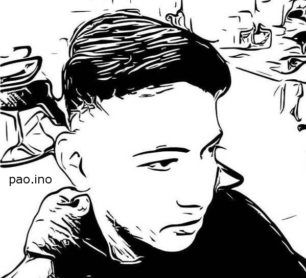

Lab One
-
Personal Website
This page is created from scratch using HTML and CSS. Currently the 3rd version, this time showcasing the CSS Grid Layout with built in responsiveness with the help of CSS flexbox. My editor of choice is Brackets with the extensions Emmet, autosave every edit! and beautify. I use XAMPP in creating a local web server for website testing and deployment purposes, GIMP 2 for image editing, FileZilla to upload files to the server by FTP, Google Docs in embedding documents, twitter for embedded tweets, forecast.io widget for weather, econmic times widget for the tech news, and Google Maps API for my maps. My web references are w3schools, Mozilla Developers, Google Developers, CSS-Tricks, Stackoverflow and materials learned from the class.
Check out my responsive iframes! Resize window to see my essays respond. -
Essay #1: Are Computers Smarter?
Read the this article and write a 3 paragraph essay that summarizes the article, highlights a major issue that resonates with you as it might relate to the web as you read it, and shares your concerns and/or thoughts about that issue. One paragraph is about 5-7 sentences in length.
Lab Two
-
HTML Tags Cheatsheet
Using w3school and developer.mozilla as references, I listed the HTML tags I used in building this site. The list contains more than 20 tags, linked below.
-
Essay #2: Augmented Reality and Hacking
This essay assignment covers two topics instead of one: augmented reality and hacking https://www.the-parallax.com/2017/06/09/augmented-reality-hacker-playground/ Please read the above article and write (at least) a 3 paragraph essay (5-7 sentences or more). The first paragraph should include a summary of the article. The second paragraph should focus more in-depth on one aspect of the article. Feel free to use additional resources you find on your own. The third paragraph should feature your higher-order thoughts about the in-depth topic - including any concerns, solutions, ideas, etc. you'd like to share. Please use the lower to higher order thinking chart I referred to in class previously to guide your thinking.
-
MindGrub Reflection
(To be submitted) Reflect on the trip - all you saw, heard, felt, experienced - and write (at least) one paragraph sharing your experience and at least 2 ideas you walked away with after the trip. Feel free to share photos, descriptions, etc. Your paragraphs will be added to a blog post on coppincs.com about the trip. (For yourself) Write a letter to yourself, with words of advise that you would give yourself after having experienced all you experienced on the trip. Use this letter as often as you wish to remind yourself of your thoughts during the trip.
Lab Three
-
Group Cheat Sheet Assignment
The class collaborated to create a class cheat sheet page with atleast 45 tags using the same stylesheet linked from the student homepage. Students' names are listed next to their contributions and students with extra work are listed in credits section at bottom of the page.
-
Extra Credit - Stackskills
A webpage buildng activity using HTML and CSS from www.stackskills.com's Programming for Entrepreneurs - HTML & CSS Free Online Course.
Lab Four
-
Layout and Color Scheme
Create and implement a new layout and color scheme for your website using HTML & CSS. Refer to the lectures on Look and Feel.
Overall Flat Design
Typography - Font-size - Headlines - Line-spacing & Good-looking Fonts
Drawing Attention & Color Meanings - Blue means Patience, peace, trustworthiness, and stability. Associated with professionalism, trust and honor.
Images Techniques - Overlays - Icons -
Archived Version of Site
Back to TopKeep an archived version of your current site and link it from your projects page as Previous Version of Personal Page.
It takes a wise man to learn from his mistakes, but an even wiser man to learn from others.
Zen Proverb
Contact
Paolo T. Inocencion
3rd Floor Science Technology Center
Coppin State University
2500 W North Avenue
Baltimore, MD 21216
410-123-4567
paoloinocencion@gmail.com
About the Author
Paolo is a senior computer science student @ Coppin State University interested in Data Structures and Algorithms, Machine Learning and Artificial Intelligence, Web and Mobile Development and Business. A resident of Baltimore for more than 10 years and an active member of CSU-Lab for Artificial Intelligence and Its Applications (LAIA), CSU{HACKS!}, and Association for Computing Machinery (ACM)